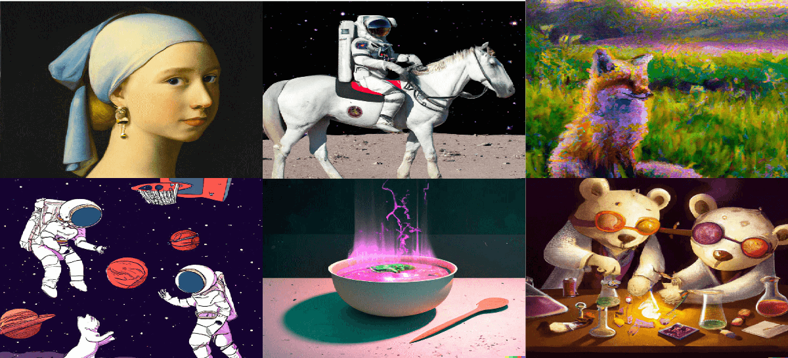
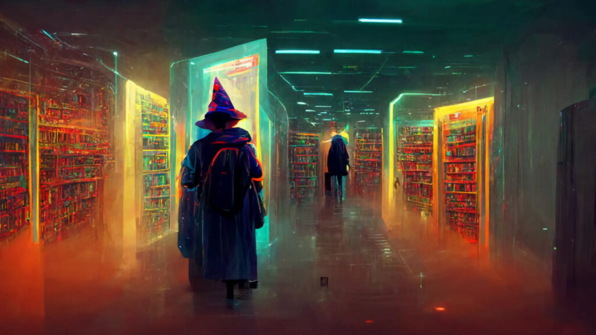

Você já pensou em criar suas proprias artes sem ter nenhum conhecimento?
Com o site Stabble Difussion isso é possivel !!!
O Stable Diffusion é um software que gera imagens através de inteligência artificial alimentada por um banco de imagens sistematicamente descritas utilizadas como referência na produção de novas imagens. A ferramenta é capaz de produzir imagens com diversos estilos.
aqui está alguns exemplos de imagens que podem ser geradas pelo site:


Você pode tentar clicando aqui!